B-3 PCB 设计
这一页把原理图变成一块真正的电路板。和案例 A 相同的步骤（转 PCB、拖元件、铺铜）只简单带过；新内容是：圆角矩形板框、天线下方的禁止区域、USB 差分对，以及一个很真实的情况——自动布线没布通，我们要找出原因、手动补上。
B3.1 转到 PCB，画圆角矩形板框#
和 A-3 一样：先 ⌘S 保存，「设计」→「更新/转换原理图到PCB」（⌥I），在「确认导入信息」里点「应用修改」。本例导入了 26 个元件、97 条飞线。
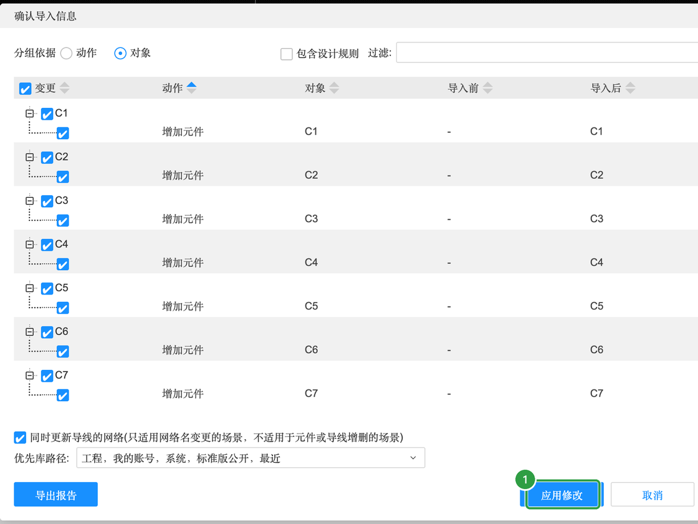
这次的板框是圆角矩形：
- 「放置」→「板框」→「矩形」
- 在画布原点 (0, 0) 单击作为左上角，移动到右下角大约 (32, -58) 再单击（旁边会实时显示宽和高）
- 单击选中板框，在右侧属性面板把尺寸改精确
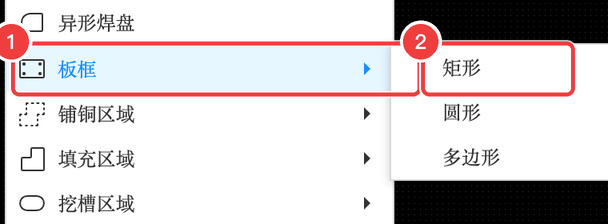
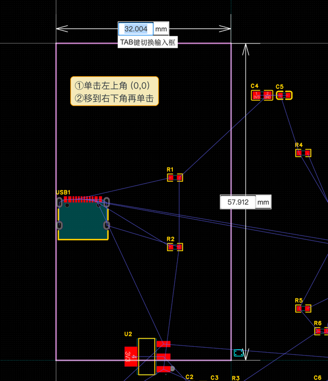
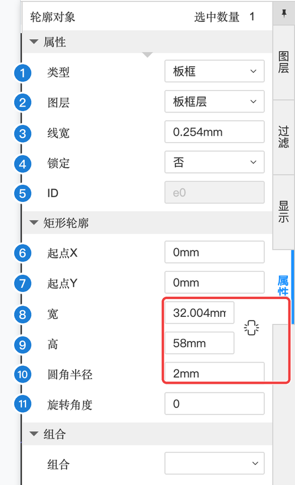
| 编号 | 属性 | 含义（大白话） | 本例怎么填 | 什么时候需要改 |
|---|---|---|---|---|
| 1 | 类型 | 这是一个“板框”对象 | 板框 | — |
| 2 | 图层 | 板框画在「板框层」上，工厂按它切板 | 板框层 | 不改 |
| 3 | 线宽 | 板框线的粗细，只是显示用 | 0.254 mm | 不改 |
| 4 | 锁定 | 锁定后不能被误拖动 | 否 | 定稿后可以锁上 |
| 5 | ID | 内部编号 | 自动 | — |
| 6 | 起点X | 矩形左上角的横坐标 | 0 mm | — |
| 7 | 起点Y | 矩形左上角的纵坐标（往下是负数） | 0 mm | — |
| 8 | 宽 | 板子宽度 | 32 mm | 🎨 想要宽一点 / 窄一点 |
| 9 | 高 | 板子高度 | 58 mm | 🎨 |
| 10 | 圆角半径 | 四个角的圆角半径，0 就是直角 | 2 mm | 🎨 也可以更圆；SMT 的工艺边要求圆角半径 0.3~2 mm（见 B-4） |
| 11 | 旋转角度 | 整个矩形旋转 | 0 | — |
B3.2 布局与天线禁止区域#
拖元件的方法和 A-5 一样（也可以选中元件后在属性面板里直接输入坐标）。本例的布局思路是“从上往下按信号流排”：
| 位置（mm，左上角为原点） | 元件 | 理由 |
|---|---|---|
| U1 (16, -11)，天线朝上贴上板边 | ESP32-C3 模组 | 天线必须在板边，下面不能有铜（下面讲） |
| 模组左边 (4, -6 / -10 / -14)；右边 (27.5, -6 / -10 / -14) | C4、C5、R4；R5、R6、C6 | 去耦电容、上拉电阻、RC 延时都紧挨模组的对应引脚 |
| SW1 (6, -22)，SW2 (21, -22) | RST、BOOT 按键 | 放在一排，手指好按 |
| LED1~3 (5 / 13.5 / 22, -30)，电容在各自下方 | 彩灯 + C7~C9 | 🎨 排成一排，在板子中间最显眼 |
| D1 (13.5, -39.5)，U2 (13.5, -45)，C1 / C2 / C3 在 U2 两边 | 二极管、稳压芯片和电容 | 电源路径：USB → U2 → 模组，电容紧贴 U2 的输入输出脚 |
| USB1 (16, -53.5)，口朝下伸出板边 | Type-C | 接口在板边（A5.2 原则①） |
| LED4 (4, -50.5)，R3 (4, -54)；R1 (23, -52)，R2 (25.5, -52) | 电源指示灯；CC 电阻 | 靠近 USB |
| J1 (29.5, -30.5)，竖放 | 排针 | 贴右板边，方便插杜邦线 |
为什么天线下面不能有铜#
模组顶部那一段（没有铁壳的部分）是PCB 天线：一段弯弯曲曲的铜线，Wi-Fi 信号从这里发出去。如果天线正下方的底板上有铜（铺铜、导线），铜会把信号挡住、吸收掉一大部分。切换下面的三种情况看看：
新操作：禁止区域#
怎么保证天线下面一定没有铜？画一个禁止区域，告诉软件“这块地方不许铺铜、不许走线”。之后铺铜、自动布线都会自动绕开它，DRC 也会检查。
- 「放置」→「禁止区域」→「矩形」（还有圆形、多边形）
- 在模组天线部分拉一个矩形，盖住整个天线区域（本例 14.5 × 6.5 mm 左右，稍微超出上板边也没关系）
- 松手后弹出属性对话框，按下表修改，点「确认」
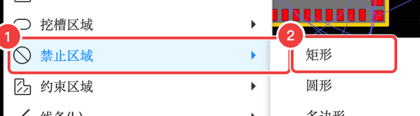
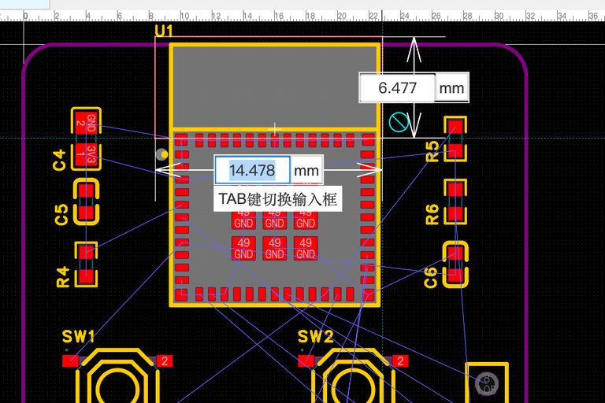
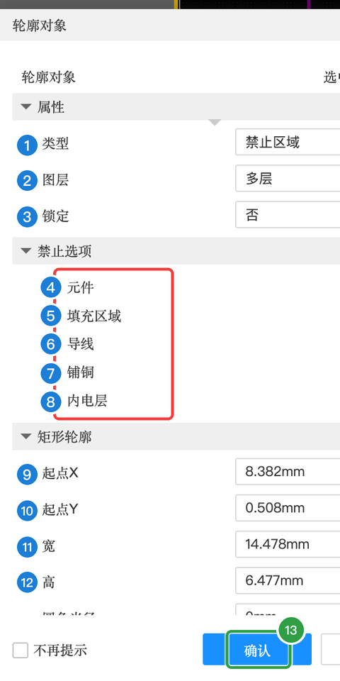
| 编号 | 属性 | 含义（大白话） | 本例怎么填 | 什么时候需要改 |
|---|---|---|---|---|
| 1 | 类型 | 区域的种类，这里是禁止区域 | 禁止区域 | — |
| 2 | 图层 | 在哪一层禁止：顶层 / 底层 / 多层（所有铜层） | 多层 | 只想禁止某一面时选顶层或底层 |
| 3 | 锁定 | 防止误拖 | 否 | — |
| 4 | 元件 | 禁止在区域里放元件 | 不勾（默认是勾上的） | 见下面的注意 |
| 5 | 填充区域 | 禁止放实心铜块 | ☑ | — |
| 6 | 导线 | 禁止走线（包括自动布线） | ☑ | — |
| 7 | 铺铜 | 铺铜到这里会自动挖空 | ☑ | — |
| 8 | 内电层 | 多层板的内部电源层，本例是双面板没有 | 不勾 | 做 4 层以上的板子时勾上 |
| 9 | 起点X | 矩形左上角 X | 8.382 mm | — |
| 10 | 起点Y | 矩形左上角 Y | 0.508 mm | — |
| 11 | 宽 | 区域宽度 | 14.478 mm | 盖住天线即可 |
| 12 | 高 | 区域高度 | 6.477 mm | — |
| 13 | 确认 | 保存设置 | 点它 | — |
B3.3 USB 差分对#
第 1 步：告诉软件哪两根是一对#
- 「设计」→「差分对管理器…」，打开后列表是空的（0/0）
- 点左下角「自动生成…」
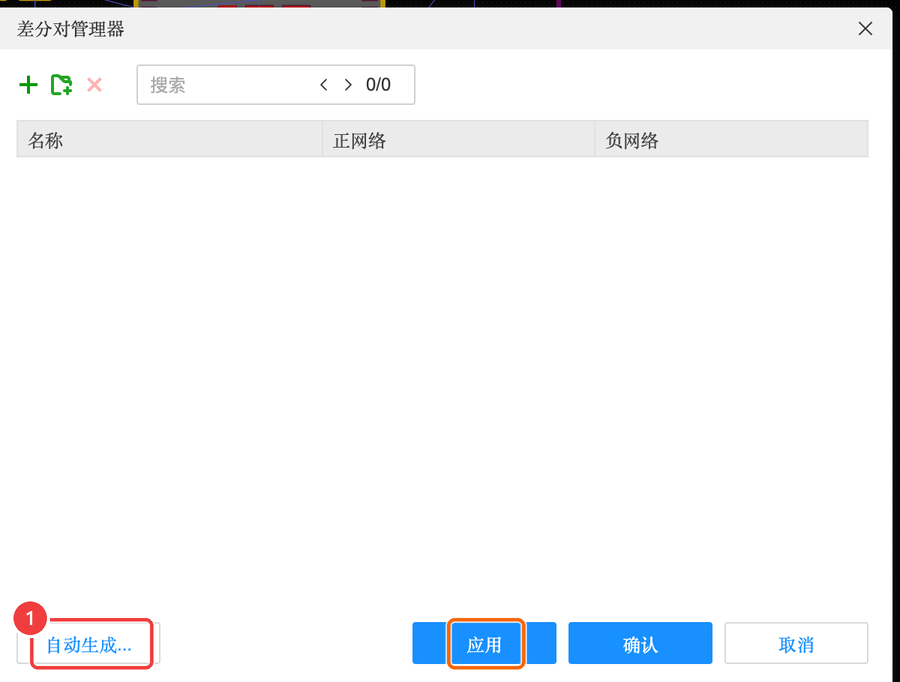
- 把「正网络特征」从默认的
P改成+，「负网络特征」从N改成-，列表里立刻识别出 USB_D（正 USB_D+ / 负 USB_D-） - 点「应用」（不是「确认」！），然后点「取消」关掉这个窗口
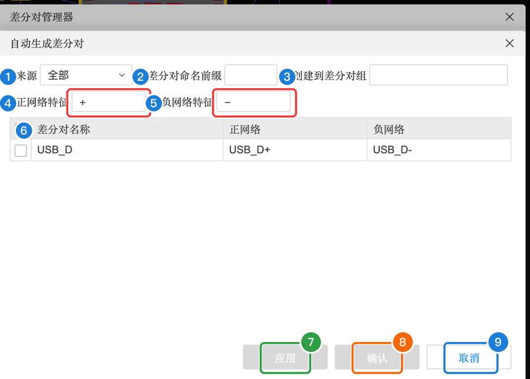
| 编号 | 属性 | 含义（大白话） | 本例怎么填 | 什么时候需要改 |
|---|---|---|---|---|
| 1 | 来源 | 从哪些网络里找：全部网络，或者只找某个网络类 | 全部 | 网络很多、只想处理一部分时 |
| 2 | 差分对命名前缀 | 给生成的差分对名字加一个前缀 | 空 | 有多对差分线、想分类时 |
| 3 | 创建到差分对组 | 把生成的差分对放进一个组 | 空 | 高速板上有很多对时 |
| 4 | 正网络特征 | 网络名里用什么字符表示“正”。默认 P（比如 USB_DP） | 改成 + | 按你的命名习惯 |
| 5 | 负网络特征 | 表示“负”的字符。默认 N | 改成 - | 同上 |
| 6 | 结果列表 | 软件按特征配好的对：差分对名称 / 正网络 / 负网络 | USB_D / USB_D+ / USB_D- | 没出现说明名字没对上，回去检查网络名 |
| 7 | 应用 | 真正把差分对生成到管理器里 | 点它 | — |
| 8 | 确认 | 本例实测点它没有反应，不会生成 | 别只点它 | — |
| 9 | 取消 | 关闭这个窗口，回到管理器 | 应用后点它 | — |
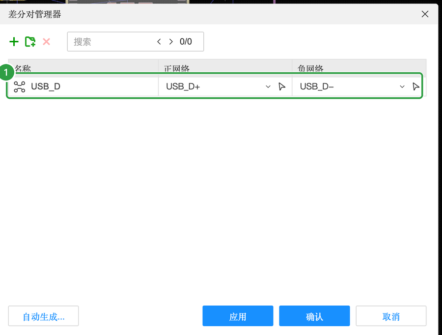
第 2 步：差分对布线 ⌥D#
- 按 ⌥D（「布线」→「差分对布线」），在 USB 插座的 D+ 或 D- 焊盘上单击
- 移动鼠标，两根线会并排一起走，间距自动保持；单击定拐点，到终点后 Esc 结束
- 走线时旁边实时显示「差分对长度误差」（两根线长度差了多少）和下面的色条：小于规则 / 符合规则 / 大于规则
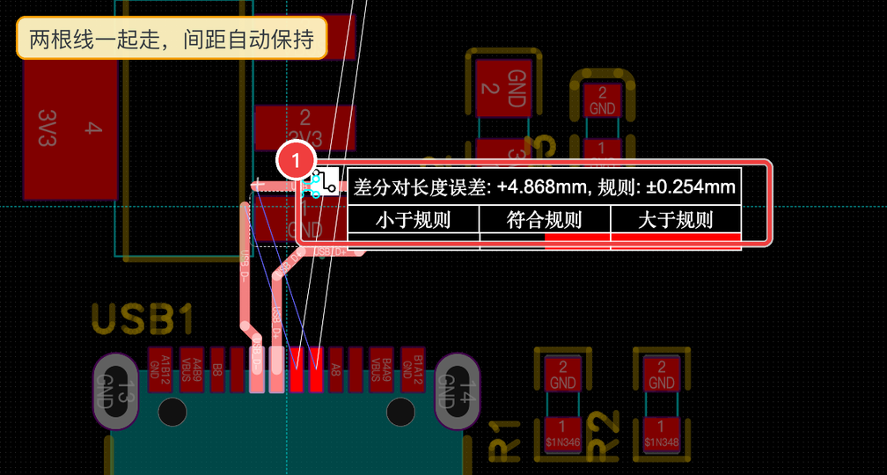
不过，本例的 USB 插座让差分布线变得很别扭，原因在下一节。
B3.4 自动布线只布通 85.71%，为什么？#
先试试自动布线（A6.3）：第一次结果是布通率 85.71%，有几根线没布上。
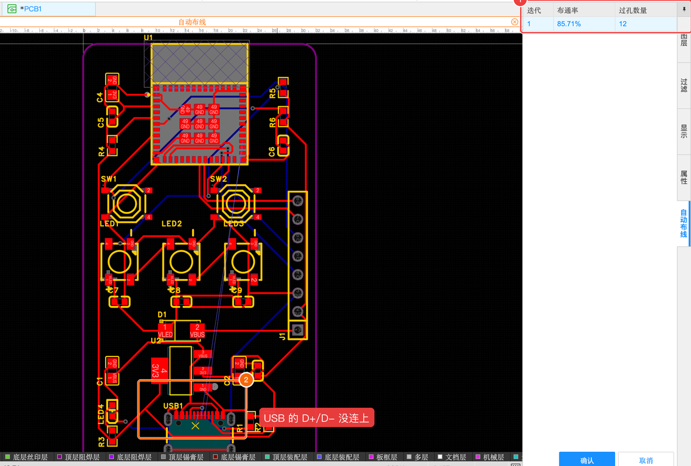
把「迭代数量」从 1 改成 5，让它多试几轮：
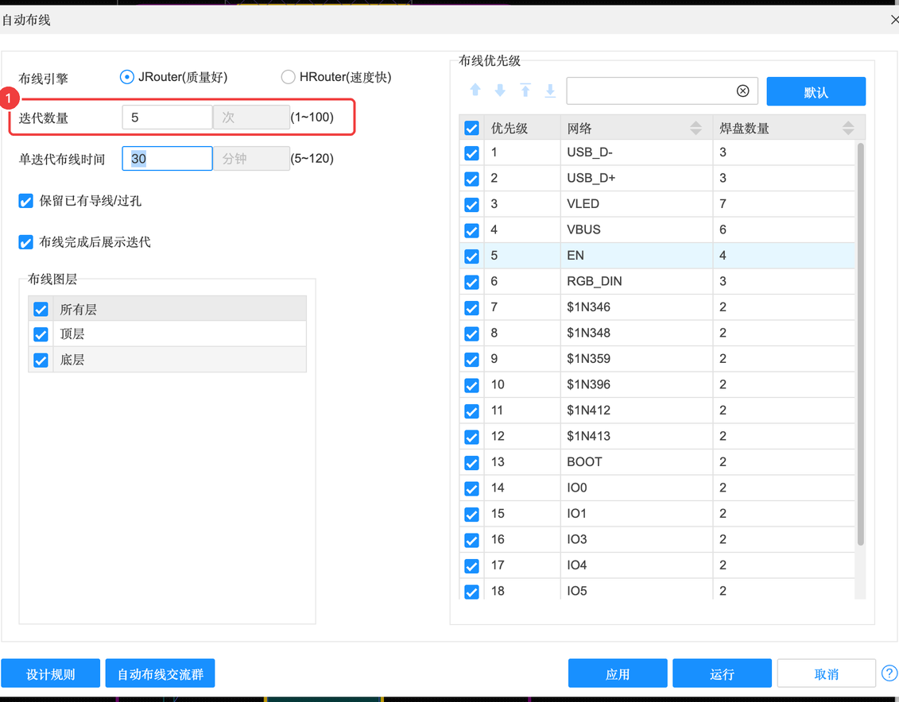
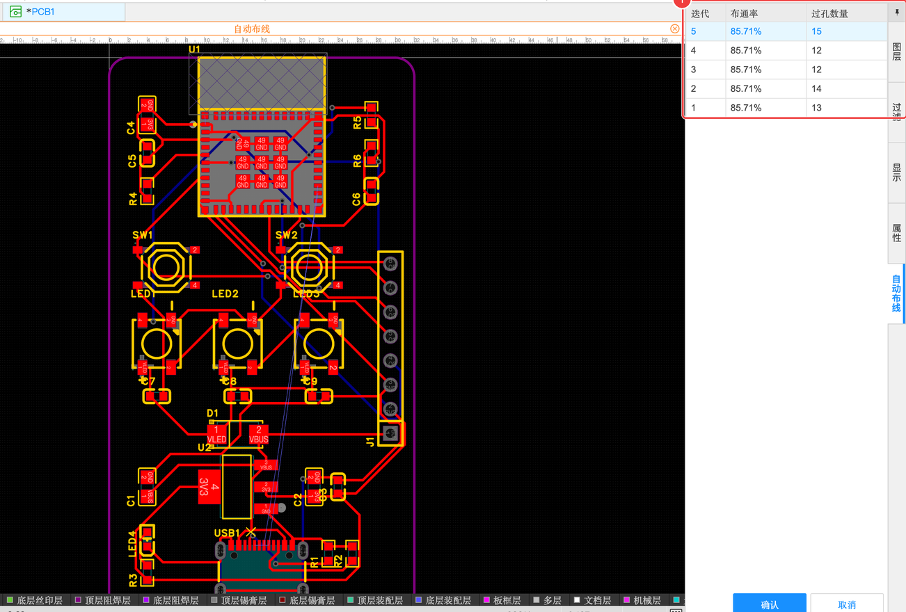
多试几次也没用，说明不是“运气”问题，而是有的地方根本走不通。仔细看没连上的飞线，有两处：
- 16P Type-C 的 D+ / D- 焊盘是交错排列的：从左到右是 D-、D+、D-、D+。每个网络的两个焊盘中间都隔着另一个网络的焊盘，焊盘之间的缝又窄得过不了线——在同一层根本没法把两个 D+ 连起来而不碰到 D-。
- 模组正中间的 3×3 GND 散热焊盘被一圈引脚包围着，导线从外面钻不进去。
解决：关键的线手动布#
专业工程师的做法本来就是“关键线手动，其余自动”。本例手动处理 USB 和模组中心的 GND：
- D+：在顶层，从两个 D+ 焊盘各引一小段往板内走，在焊盘上方用一根横线把它们连起来，再打一个过孔（⌥V）下到底层。
- D-：两个 D- 焊盘各自往另一个方向引出，各打一个过孔到底层，在底层把它们连起来。这样 D+ 的连接线在顶层、D- 的在底层，互不交叉。
- 在底层，D+ 和 D- 两根线并排往上走到模组旁边，再各打一个过孔回到顶层，接到模组的 IO19（D+）和 IO18（D-）。本例一共 5 个过孔（内径 0.3 / 外径 0.61 mm，默认规则）。
- 模组中心 GND 焊盘：在顶层把 9 个小焊盘互相连起来，再打 4 个过孔到底层，接到底层的 GND 铺铜。
- 重新运行自动布线，勾选「保留已有导线/过孔」——这次剩下的信号线全部布通；GND 留给铺铜去连。
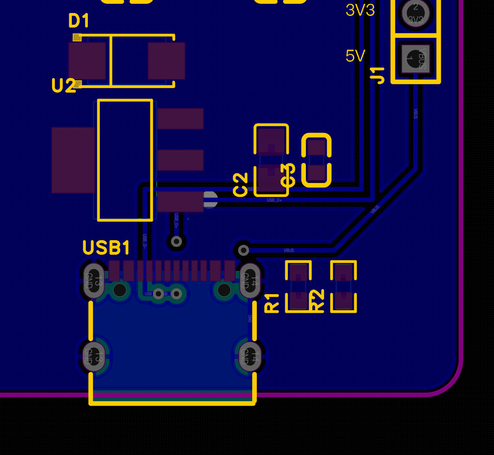
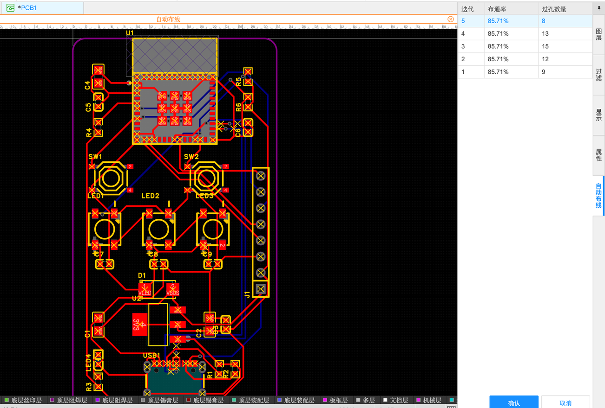
B3.5 铺铜与 DRC 收尾#
和 A-7 一样，顶层、底层各铺一块 GND，⇧B 重建铺铜。天线下方因为有禁止区域，铺铜会自动挖空：
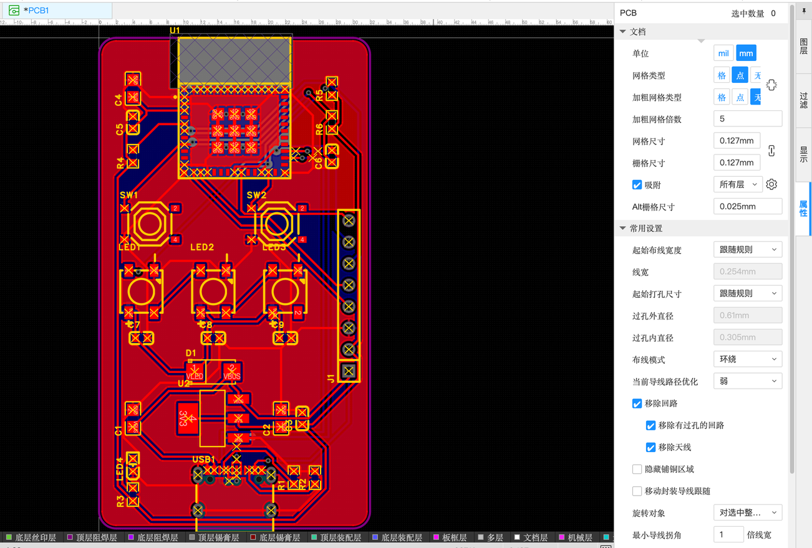
然后运行 PCB 的 DRC（A9.1）。本例前后遇到了三个问题：
问题 ①：差分对长度误差 3.582 mm，超出规则 0.254 mm#
手动布出来的 D+ 和 D- 长度差了 3.582 mm，而默认的差分对规则只允许 0.254 mm。打开「设计」→「设计规则…」，左边找到「差分对」下的 differentialPair：
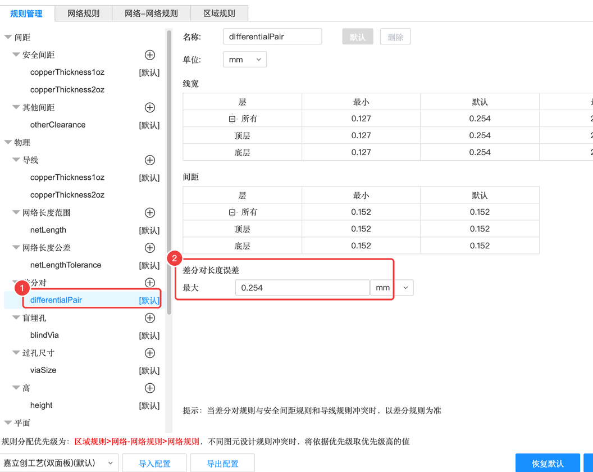
| 编号 | 属性 | 含义（大白话） | 本例怎么填 | 什么时候需要改 |
|---|---|---|---|---|
| 1 | 线宽 | 差分对里每根线的宽度：最小 / 默认 / 最大，分所有层、顶层、底层 | 0.127 / 0.254 / 2.54 mm（默认） | 要做阻抗控制时按计算值改 |
| 2 | 间距 | 一对线之间的间距 | 最小 0.152 mm（默认） | 同上 |
| 3 | 差分对长度误差 · 最大 | 两根线允许差多长 | 0.254 → 改成 5 mm | 见下面的解释 |
| 提示 | 当差分对规则与安全间距规则、导线规则冲突时，以差分规则为准 | — | — |
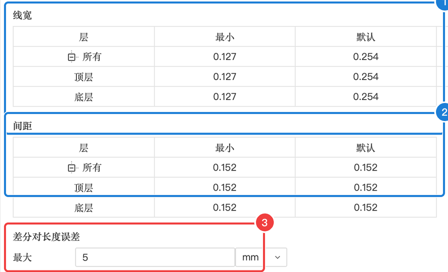
问题 ②：一段 GND 短线压进了禁止区域#
DRC 报了一段 GND 导线和天线禁止区域冲突。双击错误定位过去，把这段线缩短、退出禁止区域即可。这正是禁止区域的作用：任何铜进了天线区都会被揪出来。
问题 ③：LED4 的“器件标准化”坑#
就是 B2.9 末尾提到的那个：在原理图里把 LED4 标准化成系统库的 KT-0603R（封装 LED-SMD_L1.6-W0.8-R-RD）后，PCB 的 DRC 报了一堆“同网络间距为 0”的错误，自动布线还把 GND 接到了 LED 的 1 脚。
处理方法：回到原理图把 LED4 换回 C2286 原来的 LED0603-RD 封装，然后「设计」→「更新/转换原理图到PCB」，在确认导入信息里能看到 LED4 的“移除元件 / 增加元件”，点「应用修改」，再把 LED4 摆回原位、重新连线：
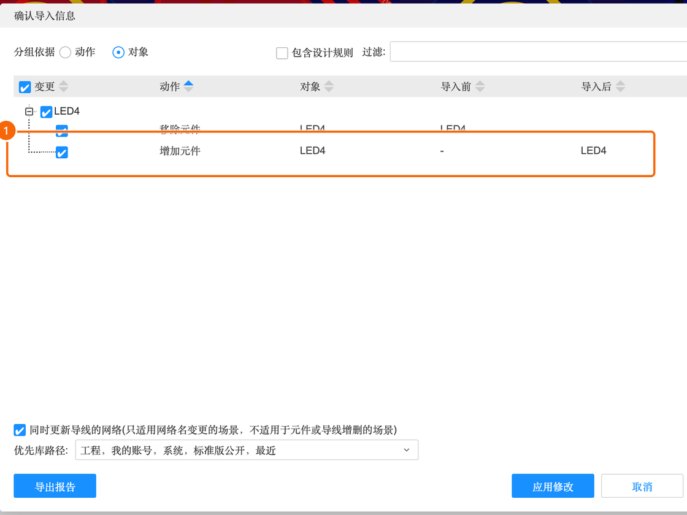
三个问题都处理完，PCB 的 DRC 显示「未发现问题」，飞线 0 条。
B3.6 丝印：给排针写上引脚名#
这块板子以后要插杜邦线接东西，排针旁边一定要写清楚每只脚是什么，否则每次都得翻原理图：
- 顶层丝印：排针左边从下到上写
5V、3V3、GND、IO0、IO1、IO3、IO4、IO5；两个按键上方写RST、BOOT。字高 0.9 mm、线宽 0.15 mm（板子小，字也小；再小就印不清了）。 - 底层丝印：板子背面写作品名，例如“ESP32-C3 彩灯板 / Quickstart 案例 B”。
放文字的方法和 A8.2 一样。写底层文字时：
- 在底部图层快捷栏点「底层丝印层」，把当前层切过去
- 「放置」→「文本」，写好内容，放到板子上
- 选中这段文字，在右侧属性面板确认它在底层丝印层就行，不用手动去改「镜像」
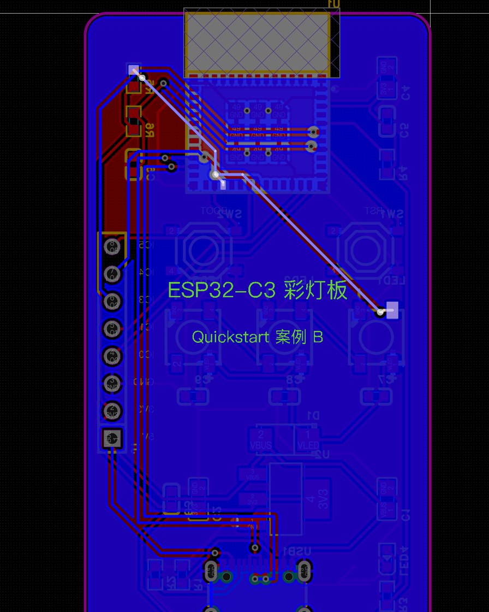
B3.7 检查与 3D 预览#
最后看一眼完整的板子，和 3D 预览（A9.2）检查元件方向、排针位置、按键是不是好按：
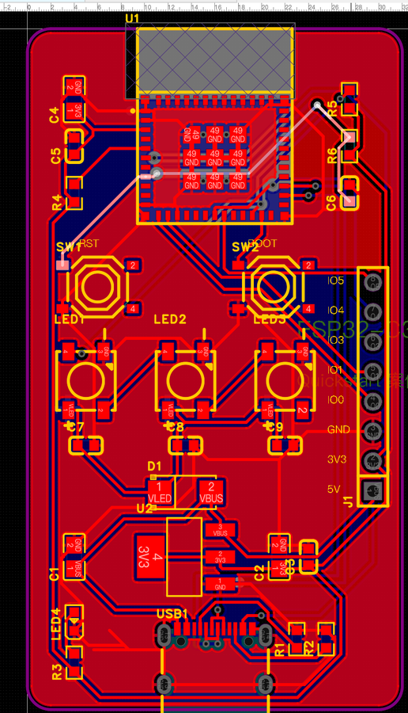
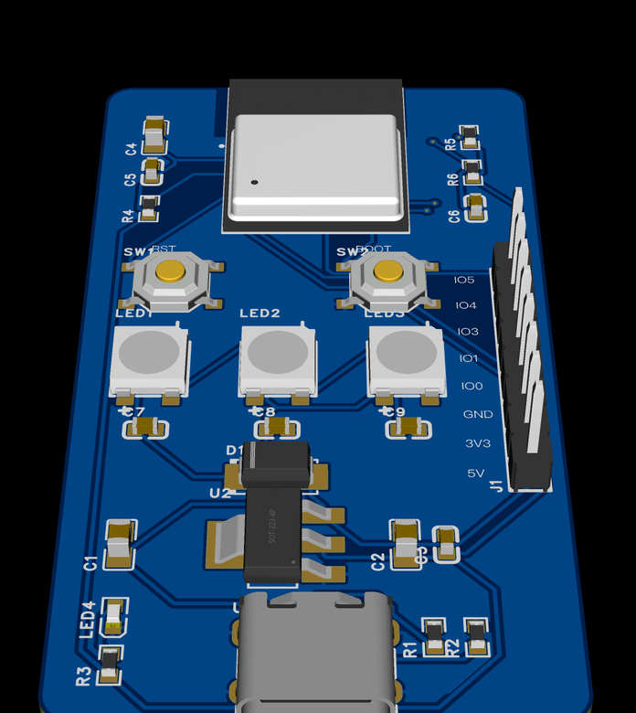
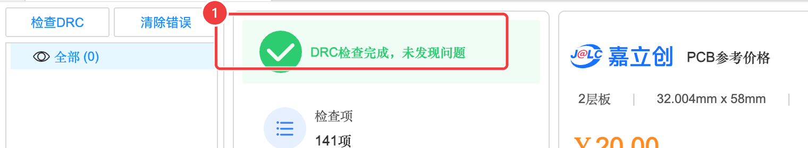
- 天线贴板边，下方有禁止区域（多层，禁止填充区域 / 导线 / 铺铜），铺铜在这里是挖空的
- USB 插座口朝外、和板边对齐
- D+ / D- 已设为差分对，并排走线；长度误差规则已按 USB 全速放宽
- 去耦电容紧挨模组、稳压芯片、每颗彩灯
- 飞线 0 条，PCB DRC 未发现问题
- 排针、按键旁边有丝印；底层文字是镜像的、没有超出板框
- 改过器件之后重新跑过 PCB DRC